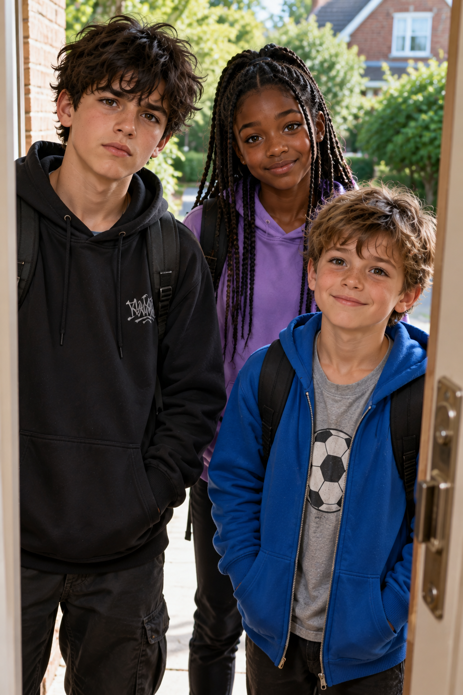

CONNECTION
Jake's Friends
Callum, Sam and Megan are part of Jake's wider circle and join him for the Bluebell Woods picnic.

FRIENDS
“A picnic in Bluebell Woods. What could possibly go wrong?”
Three of Jake's friends who join him for a picnic in Bluebell Woods. What begins as an ordinary day out brings Callum, Sam and Megan into the events surrounding Noah, Maya, Leo and Elsie.
WHO ARE CALLUM, SAM AND MEGAN?
Callum, Sam and Megan are friends who join Jake for the Bluebell Woods picnic. They are part of the group enjoying what should have been a straightforward day outdoors before events become much more complicated.
Their day brings them into contact with four younger children: twins Noah and Maya, their cousin Leo Patel, and their friend Elsie Brooks. That meeting links the picnic to the larger mystery unfolding in This Is My Last Warning.
Callum, Sam and Megan help widen Jake's circle beyond the familiar faces of Jack, Ruby and Alex, making Bluebell Woods feel like a real day out with friends before the story takes a darker turn.
AT A GLANCE
CONNECTION
Callum, Sam and Megan are part of Jake's wider circle and join him for the Bluebell Woods picnic.
KEY SETTING
Their main part in Book Seven begins with a picnic beside the stream in Bluebell Woods.
THE YOUNGER GROUP
The picnic brings them into contact with the four younger children on the other side of the stream.
WHY THEY MATTER
Their presence helps establish the friendly beginning before the events surrounding Leo become much more serious.
THEIR STORY
Jake is the narrator and central character of the This Is My... series.
THE PEOPLE AROUND THEM
Bluebell Woods brings Jake's group together with four younger children who become important to Book Seven.
ONE PICNIC. SEVEN CHILDREN. ONE MYSTERY.
Callum, Sam and Megan begin Book Seven as part of a simple day out with friends. But Bluebell Woods connects them with the younger children—and with a mystery that soon becomes frighteningly real.
Meet the Rest of the Cast